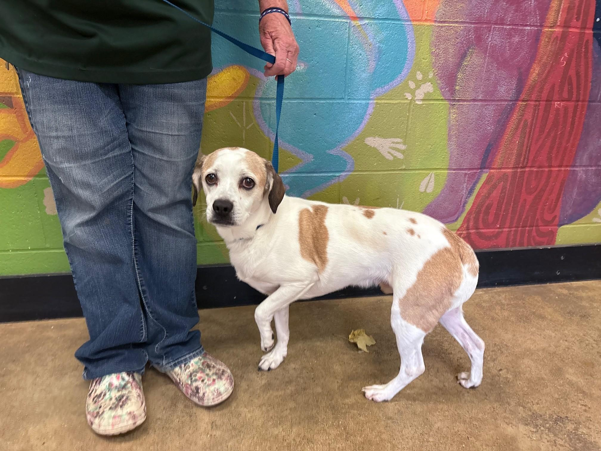
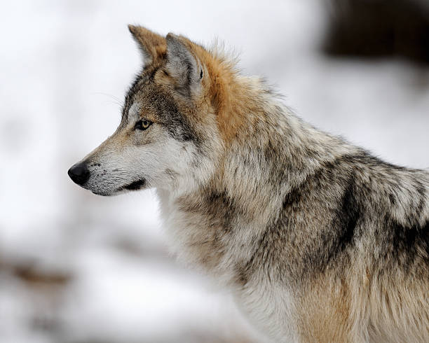
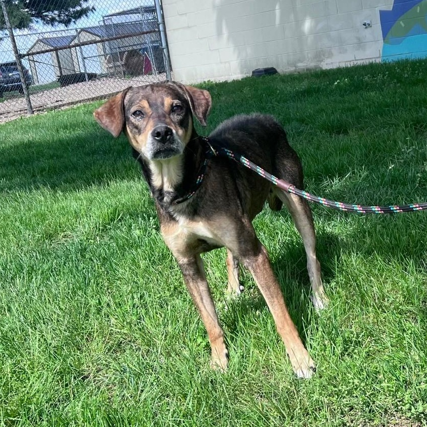

A gene called ASIP is responsible for creating 4 main fur patterns in dogs. Combined with modifiers, this can create 8 different patterns!
Sables come in 3 different variations, shaded, tipped, and clear. Shaded sables have a darker back, tail, and have a distinctive “widow’s peak”, a v shaped darker pattern on their forehead. Tipped sables are like shaded sables, but only the tips of their fur have darker coloration, giving the dog a lighter appearance. Clear sables on the other hand, have little to no darker coloration on their fur, and are virtually indistinguishable from recessive red dogs, but still have the sable gene and NOT recessive red. They just look very alike.
This dog named Bolt(currently available for adoption as of 11/28!) is a clear sable. Although he may look like a recessive red dog, because he has no black pigment on his back, if you look at his ear, you can see some black pigment action! Recessive red dogs CANNOT have any black pigmented hairs, so he must be a clear sable! Darker pigments in ears are a sign of sables!
(click on the images of dogs to go to their adoption page!)
This looks just the way it’s named; Wolves! This is the gene that the ancestor of dogs, wolves, had. This gene makes each hair of the dog alternate between pigments, giving the dog the classic “gray” to “muted brown” look that lets them camouflage.
This generally makes the dog have “tan” “points”, giving the dog a “tan”(but generally ranging from white to dark orange) markings on eyebrows, muzzle, chest, and feet. This can be modified by a gene called RALY, resulting in 2 different variations: Saddle, which the dog has a darker saddle shaped marking on their back, and creeping tan, which the dog is born with tanpoints, but gradually turns into a saddle.
Here's an example of a classic tanpoint, Forrest!
This is the rarest variation of them all! Recessive black only appears in breeds such as German Shepherds, Shetland Sheepdog, and Schipperke. Most black dogs you see are the result of the Dominant Black gene.
Images of animals courtesy of Columbus Animal Care Servies and Kat Dunn Photography